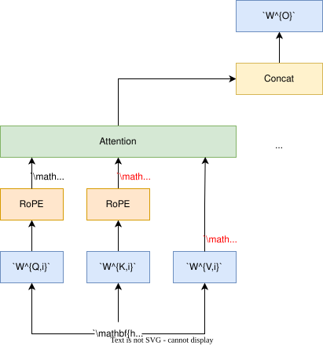
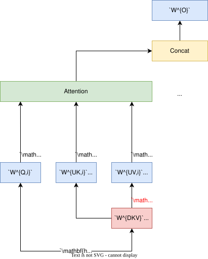
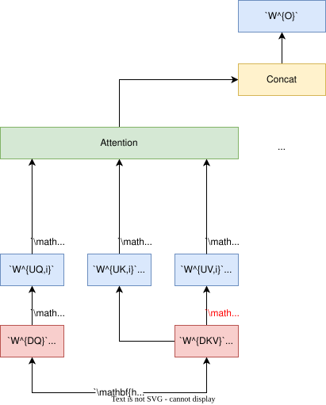
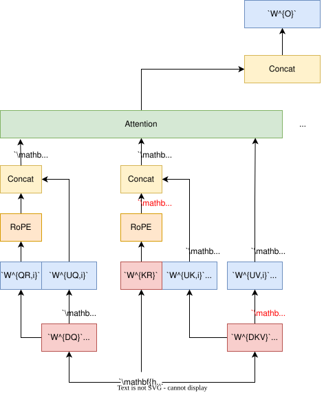
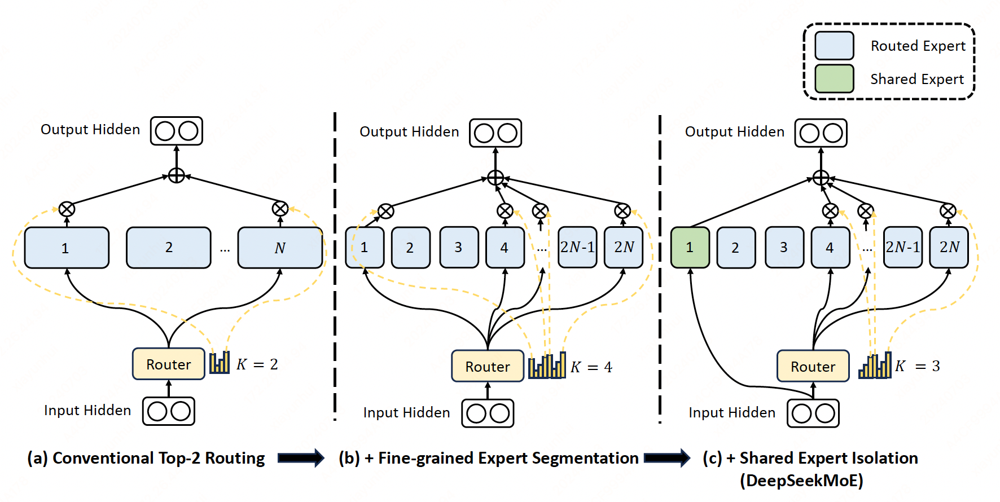

DeepSeek-V2#
Note
DeepSeek-V2 is a strong Mixture-of-Experts (MoE) language model characterized by
economical training and efficient inference.
It comprises 236B total parameters, of which 21B
are activated for each token, and supports a context length of 128K tokens. DeepSeek-V2 adopts
innovative architectures including Multi-head Latent Attention (MLA) and DeepSeekMoE.
Multi-head Latent Attention#
Standard Multi-Head Attention#
Let \(d\) be the embedding dimension, \(n_h\) be the number of attention heads, \(d_h\) be the dimension per head, and \(\mathbf{h}_{t}\in\mathbb{R}^{d}\) be the attention input of the \(t\)-th token. Standard MHA first produces \(\mathbf{q}_{t},\mathbf{k}_{t}, \mathbf{v}_{t}\in\mathbb{R}^{d_{h}n_h}\) through three matrices \(W^Q,W^K,W^V\in\mathbb{R}^{d_{h}n_{h}\times{d}}\), respectively:
Then, \(\mathbf{q}_{t}, \mathbf{k}_{t}, \mathbf{v}_{t}\) will be sliced into \(n_h\) heads for the multi-head attention computation:
where \(\mathbf{q}_{t,i},\mathbf{k}_{t,i},\mathbf{v}_{t,i}\in\mathbb{R}^{d_h}\) denote the query, key, and value of the \(i\)-th attention head; \(W^{O}\in\mathbb{R}^{d\times{d_{h}n_{h}}}\) denotes the output projection matrix.

Note
During inference, all keys and values need to be cached to accelerate inference, so MHA needs to cache \(2n_{h}d_{h}l\) elements for each token. In model deployment, this heavy KV cache is a large bottleneck that limits the maximum batch size and sequence length.
Low-Rank Key-Value Joint Compression#
The core of MLA is the low-rank joint compression for keys and values to reduce KV cache:
where \(\mathbf{c}_{t}^{KV}\in\mathbb{R}^{d_c}\) is the compressed latent vector for keys and values, \(d_c\ll d_{h}n_{h}\) denotes the KV compression dimension, \(W^{DKV}\in\mathbb{R}^{d_{c}\times d}\) and \(W^{UK},W^{UV}\in\mathbb{R}^{d_{h}n_{h}\times d_c}\). During inference, MLA only needs to cache \(\mathbf{c}_{t}^{KV}\), so its KV cache has only \(d_{c}l\) elements.

In addition, during inference:
\(W^{UK}\) can be absorbed into \(W^{Q}\), similarily, \(W^{UV}\) can be absorbed into \(W^{O}\). We even do not need to compute keys and values out for attention.
Low-Rank Compression for Queries#
In order to reduce the activation memory during training, we also perform low-rank compression for the queries, even if it cannot reduce the KV cache:
where \(\mathbf{c}_{t}^{Q}\in\mathbb{R}^{{d_{c}}'}\) is the compressed latent vector for queries, \({d_c}'\ll d_{h}n_{h}\) denotes the query compression dimension, \(W^{DQ}\in\mathbb{R}^{{d_c}'\times d}\) and \(W^{UQ}\in\mathbb{R}^{d_{h}n_{h}\times {d_c}'}\).

Decoupled Rotary Position Embedding#
RoPE is position-sensitive for both keys and queries. If we apply RoPE for the keys \(\mathbf{k}_{t}^{C}\):
In this way:
\(W^{UK}\) cannot be absorbed into \(W^{Q}\) any more during inference, since a RoPE matrix related to the currently generating token will lie between \(W^{Q}\) and \(W^{UK}\) and matrix multiplication does not obey a commutative law.
As a solution, we propose the decoupled RoPE strategy that uses additional multi-head queries \(\mathbf{q}_{t,i}^{R}\in\mathbb{R}^{d_h^{R}}\) and a shared key \(\mathbf{k}_{t}^{R}\in\mathbb{R}^{d_h^{R}}\) to carry RoPE, where \(d_{h}^{R}\) denotes the per-head dimension of the decoupled queries and key. Equipped with the decoupled RoPE strategy, MLA performs the following computation:
where \(W^{QR}\in\mathbb{R}^{d_{h}^{R}n_{h}\times {d_{c}}'}\) and \(W^{KR}\in\mathbb{R}^{d_{h}^{R}n_{h}\times d}\) are matrices to produce the decouples queries and key. During inference, the decoupled key should also be cached. Therefore, DeepSeek-V2 requires a total KV cache containing \((d_c+d_{h}^{R})l\) elements.

DeepSeekMoE#
A standard Transformer language model is constructed by stacking \(L\) layers of standard Transformer blocks, where each block can be represented as follows:
where \(T\) denotes the sequence length, \(\text{Self-Att}(·)\) denotes the self-attention module, \(\text{FFN}(·)\) denotes the Feed-Forward Network (FFN), \(\mathbf{u}_{1:T}^{l}\in\mathbb{R}^{T\times d}\) are the hidden states of all tokens after the \(l\)-th attention module, and \(\mathbf{h}_{t}^{l}\in\mathbb{R}^{d}\) is the output hidden state of the \(t\)-th token after the \(l\)-th Transformer block. We omit the layer normalization in the above formulations for brevity.
A typical practice to construct an MoE language model usually substitutes FFNs in a Transformer with MoE layers. An MoE layer is composed of multiple experts, where each expert is structurally identical to a standard FFN. Then, each token will be assigned to one or two experts. If the \(l\)-th FFN is substituted with an MoE layer:
where \(N\) denotes the total number of experts, \(\text{FFN}_{i}\) is the \(i\)-th expert FFN, \(g_{i,t}\) denotes the gate value for the \(i\)-th expert, \(s_{i,t}\) denotes the token-to-expert affinity, \(\text{Topk}(\cdot,K)\) denotes the set comprising \(K\) highest affinity scores among those calculated for the \(t\)-th token and all \(N\) experts, and \(\mathbf{e}_{i}^{l}\) is the centroid of the \(i\)-th expert in the \(l\)-th layer (parameter of the gate).
Fine-Grained Expert Segmentation#
While maintaining a consistent number of expert parameters and computational cost, we segment the experts with a finer grain. The finer expert segmentation enables a more flexible and adaptable combination of activated experts.
To be specific, we segment each expert FFN into \(m\) smaller experts by reducing the FFN intermediate hidden dimension to \(\frac{1}{m}\) times its original size. Since each expert becomes smaller, in response, we also increase the number of activated experts to \(m\) times to keep the same computation cost.

Load Balance Consideration#
Automatically learned routing strategies may encounter the issue of load imbalance.
Expert-Level Balance Loss. Imbalance leeds to higher loss.
Device-Level Balance Loss. In addition to the expert-level balance loss, we additionally design a device-level balance loss to ensure balanced computation across different devices. If we partition all routed experts into \(D\) groups \(\{\mathcal{E}_{1}, \mathcal{E}_{2}, \dots, \mathcal{E}_{D}\}\), and deploy each group on a single device, the device-level balance loss is computed as follows: